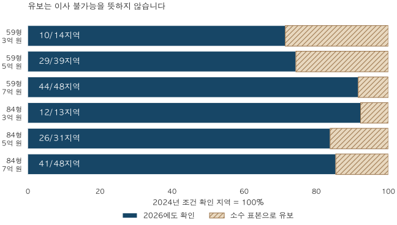

전세와 월세 · 같은 보증금의 2년 뒤
같은 보증금 전세, 2년 뒤에도 같은 면적을 고를 수 있을까?
3억·5억·7억 원 보증금을 고정해 2024·2026년 서울·수집 경기의 두 면적군을 비교합니다. 지역 지도와 확인·유보 상태, 면적 축소와 지역 이동의 한계를 살펴보세요.
분석 기간 · 2024·2026년 6월 말 · 서울·수집 경기 | 자료 기준일 · 2026-10-04
전세 만기가 돌아왔는데 보증금을 더 보태기 어렵다면, 같은 면적을 유지할 지역부터 찾게 됩니다. 3억·5억·7억 원을 그대로 가진 상황을 가정해, 2024년 6월과 2026년 6월의 서울·수집 경기 전세 모형가격을 비교했습니다.
같은 보증금 조건을 확인한 지역은 줄었지만, 그것을 곧바로 ‘갈 수 있는 곳이 줄었다’고 해석할 수는 없습니다. 예를 들어 5억 원·84형은 2년 전 확인한 31지역 중 26지역에서 조건이 다시 확인됐습니다. 나머지 5지역은 소수 표본으로 판단을 유보했습니다. 예산 안 분석 재고가 완전히 사라진 것으로 확인된 곳은 없었습니다.
1. 실제 계약자의 보증금이 아닌, 고정 예산 비교입니다
3억·5억·7억 원은 독자가 비교할 수 있도록 정한 예산입니다. 2024년에 그 금액으로 계약한 가구를 추적한 자료가 아닙니다. 물가나 소득 증가, 대출 가능액을 더하지 않고 같은 명목 보증금으로 두 날짜를 비교합니다.
같은 단지·주택형의 전세 모형가격이 예산 이하인 주택을 해당 유형의 측정 세대수로 합쳤습니다. 단지 평균이 예산보다 낮다는 이유로 그 단지의 모든 집을 포함하지 않았습니다. 두 시점 모두 가격 근거가 충분한 같은 주택과 같은 현재 측정 세대수를 사용하므로, 포함 주택의 교체로 생기는 차이를 줄였습니다.
면적은 59형(전용 17·18평형, 모형 기준면적 약 56.2·59.5㎡)과 84형(전용 25·26평형, 약 82.6·86.0㎡)으로 나눴습니다. 정확히 59㎡·84㎡만 고른 자료나 공급면적 기준이 아닙니다. 면적 표기는 아파트 통계 용어 사전에서 확인할 수 있습니다.
2. ‘확인 비율’과 ‘이사 가능 비율’은 다릅니다
분모는 2024년 6월에 해당 보증금·면적 조건을 확인한 지역입니다. 그 지역들 가운데 2026년 6월에도 충분한 분석 재고가 예산 안에 있는 곳을 셌습니다. 실제 공실·매물·임대인의 계약 의사는 관측하지 않았습니다.

| 면적·보증금 | 2024 확인 | 2026에도 확인 | 분석 재고 중 없음 | 판단 유보·근거 부족 | 확인 비율 | 미정 지역 포함 가능 상한 |
|---|---|---|---|---|---|---|
| 59형 · 3억 원 | 14 | 10 | 0 | 4 | 71.4% | 100% |
| 59형 · 5억 원 | 39 | 29 | 0 | 10 | 74.4% | 100% |
| 59형 · 7억 원 | 48 | 44 | 0 | 4 | 91.7% | 100% |
| 84형 · 3억 원 | 13 | 12 | 0 | 1 | 92.3% | 100% |
| 84형 · 5억 원 | 31 | 26 | 0 | 5 | 83.9% | 100% |
| 84형 · 7억 원 | 48 | 41 | 0 | 7 | 85.4% | 100% |
5억 원·84형의 확인 비율은 26÷31, 약 83.9%입니다. 나머지 16.1%를 ‘이사 불가’로 세지 않았습니다. 미정 지역까지 조건을 충족한다고 밝혀질 가능성을 포함한 상한은 100%입니다. 이 범위는 이사 성공 확률이나 통계적 신뢰구간이 아닙니다.
현재 전체 61지역 중 확인한 지역 수는 아래와 같습니다. 앞 표는 과거 확인 지역만 추적하므로 분모가 다릅니다. 특히 5억 원·큰 면적의 현재 확인 27지역에는 과거 확인 집합에 없던 1지역이 들어 있습니다.
| 면적·보증금 | 조건 확인 | 분석 재고 중 없음 | 판단 유보(소수) | 근거 부족 |
|---|---|---|---|---|
| 59형 · 3억 원 | 10 | 15 | 25 | 11 |
| 59형 · 5억 원 | 29 | 2 | 19 | 11 |
| 59형 · 7억 원 | 44 | 0 | 6 | 11 |
| 84형 · 3억 원 | 12 | 31 | 9 | 9 |
| 84형 · 5억 원 | 27 | 7 | 18 | 9 |
| 84형 · 7억 원 | 41 | 1 | 10 | 9 |
3. 지역을 고르고 두 시점을 비교하세요
서울 25구와 수집 경기 36개 시·구를 모두 남겼습니다. 경기도 전체나 인천을 포함한 수도권 전체 지도는 아닙니다. ‘분석 재고 중 없음’도 해당 분석 주택에 관한 판정이며, 지역 전체에 매물이 없다는 뜻이 아닙니다.
● 조건 확인 · □ 분석 재고 중 없음 · ▲ 판단 유보(소수) · × 근거 부족
점은 법정동 참고 좌표의 평균을 반올림한 대략적 위치입니다. 행정 경계나 개별 아파트 위치가 아니며 두 지도의 축척은 다릅니다. 주황 테두리는 선택 지역입니다.
비율은 비교 대상 주택의 측정 세대수 중 예산 안에 들어오는 비중입니다. 알려진 지역 재고 전체를 분모로 삼은 값은 아닙니다. 작은 집합의 수치가 드러나거나 비교 근거가 부족하면 ‘비율 미제시’로 남깁니다. 이는 0%를 뜻하지 않습니다.
4. 같은 지역에서 면적을 줄일까, 같은 면적으로 지역을 옮길까?
면적을 줄이는 경로는 같은 지역·보증금에서 두 면적을 비교합니다. 작은 면적은 확인되고 큰 면적은 소수 표본으로 유보된 곳이 3억 원에서 2지역, 5억 원에서 5지역, 7억 원에서 4지역이었습니다.
| 보증금 | 큰 면적: 소수로 유보 | 큰 면적: 근거 부족 | 큰 면적: 분석 재고 중 없음 |
|---|---|---|---|
| 3억 원 | 경기 고양시 덕양구 · 경기 용인시 기흥구 | 없음 | 없음 |
| 5억 원 | 서울 서대문구 · 서울 강서구 · 경기 안양시 동안구 · 경기 광명시 · 경기 용인시 수지구 | 서울 도봉구 | 없음 |
| 7억 원 | 서울 성동구 · 서울 마포구 · 경기 성남시 중원구 · 경기 성남시 분당구 | 서울 도봉구 · 서울 금천구 | 없음 |
그러나 큰 면적의 분석 재고가 0이고 작은 면적만 확인된 지역은 없었습니다. 따라서 이 표로 ‘평수를 줄여야만 살 수 있다’고 결론 내릴 수 없습니다. 면적마다 주택 구성과 가격 근거가 다르므로 작은 면적의 확인 지역 수가 언제나 더 많아야 하는 것도 아닙니다.
지역을 옮기는 경로는 면적과 보증금을 고정하고 지도·전체 표의 ‘조건 확인’ 지역을 비교합니다. 확인된 지역도 통근, 학교, 관리비, 실제 매물과 보증금 반환 위험을 따로 확인해야 합니다. 이 자료는 후보 탐색의 출발점이며 개인에게 특정 지역이나 계약을 권하는 자료가 아닙니다.
가장 강한 반론은 ‘모형가격 아래 재고가 있다는 사실로 당장 계약할 집을 찾을 수 있느냐’입니다. 그렇지 않습니다. 현재 측정 재고를 과거에도 같은 가중치로 사용한 비교이고, 분석에서 빠진 주택과 실제 매물 상황은 다를 수 있습니다. 거래가 드문 지역이나 예산 문턱에 가까운 주택에서는 결론을 더 유보해야 합니다.
5. 두 면적·세 보증금의 전체 지역 표
2024년 6월 27일과 2026년 6월 25일을 비교합니다. 표는 자바스크립트 없이도 읽을 수 있습니다. 모형 민감도는 가격 추정의 하한·상한에 각각 예산 문턱을 적용한 참고 범위이며, 보정된 95% 신뢰구간이나 실제 매물 비중의 범위가 아닙니다.
59형 · 3억 원 · 61지역
| 지역 | 2024년 6월 | 2026년 6월 |
|---|---|---|
| 서울 종로구 | 근거 부족 · 비율 미제시 | 근거 부족 · 비율 미제시 |
| 서울 중구 | 근거 부족 · 비율 미제시 | 근거 부족 · 비율 미제시 |
| 서울 용산구 | 근거 부족 · 비율 미제시 | 근거 부족 · 비율 미제시 |
| 서울 성동구 | 분석 재고 중 없음 · 0% · 모형 민감도 0~0% | 분석 재고 중 없음 · 0% · 모형 민감도 0~0% |
| 서울 광진구 | 분석 재고 중 없음 · 0% · 모형 민감도 0~0% | 분석 재고 중 없음 · 0% · 모형 민감도 0~0% |
| 서울 동대문구 | 분석 재고 중 없음 · 0% · 모형 민감도 0~0% | 분석 재고 중 없음 · 0% · 모형 민감도 0~0% |
| 서울 중랑구 | 판단 유보(소수) · 비율 미제시 | 판단 유보(소수) · 비율 미제시 |
| 서울 성북구 | 분석 재고 중 없음 · 0% | 분석 재고 중 없음 · 0% · 모형 민감도 0~0% |
| 서울 강북구 | 근거 부족 · 비율 미제시 | 근거 부족 · 비율 미제시 |
| 서울 도봉구 | 판단 유보(소수) · 비율 미제시 | 판단 유보(소수) · 비율 미제시 |
| 서울 노원구 | 판단 유보(소수) · 비율 미제시 | 판단 유보(소수) · 비율 미제시 |
| 서울 은평구 | 분석 재고 중 없음 · 0% | 분석 재고 중 없음 · 0% |
| 서울 서대문구 | 판단 유보(소수) · 비율 미제시 | 분석 재고 중 없음 · 0% · 모형 민감도 0~0% |
| 서울 마포구 | 분석 재고 중 없음 · 0% · 모형 민감도 0~0% | 분석 재고 중 없음 · 0% · 모형 민감도 0~0% |
| 서울 양천구 | 판단 유보(소수) · 비율 미제시 | 판단 유보(소수) · 비율 미제시 |
| 서울 강서구 | 판단 유보(소수) · 비율 미제시 | 판단 유보(소수) · 비율 미제시 |
| 서울 구로구 | 판단 유보(소수) · 비율 미제시 | 판단 유보(소수) · 비율 미제시 |
| 서울 금천구 | 판단 유보(소수) · 비율 미제시 | 판단 유보(소수) · 비율 미제시 |
| 서울 영등포구 | 판단 유보(소수) · 비율 미제시 | 판단 유보(소수) · 비율 미제시 |
| 서울 동작구 | 판단 유보(소수) · 비율 미제시 | 분석 재고 중 없음 · 0% · 모형 민감도 0~0% |
| 서울 관악구 | 판단 유보(소수) · 비율 미제시 | 판단 유보(소수) · 비율 미제시 |
| 서울 서초구 | 분석 재고 중 없음 · 0% · 모형 민감도 0~0% | 분석 재고 중 없음 · 0% · 모형 민감도 0~0% |
| 서울 강남구 | 분석 재고 중 없음 · 0% · 모형 민감도 0~0% | 분석 재고 중 없음 · 0% · 모형 민감도 0~0% |
| 서울 송파구 | 판단 유보(소수) · 비율 미제시 | 판단 유보(소수) · 비율 미제시 |
| 서울 강동구 | 분석 재고 중 없음 · 0% | 분석 재고 중 없음 · 0% |
| 경기 수원시 장안구 | 조건 확인 · 비율 미제시 | 판단 유보(소수) · 비율 미제시 |
| 경기 수원시 권선구 | 조건 확인 · 비율 미제시 | 조건 확인 · 49% |
| 경기 수원시 팔달구 | 판단 유보(소수) · 비율 미제시 | 판단 유보(소수) · 비율 미제시 |
| 경기 수원시 영통구 | 판단 유보(소수) · 비율 미제시 | 판단 유보(소수) · 비율 미제시 |
| 경기 성남시 수정구 | 분석 재고 중 없음 · 0% | 분석 재고 중 없음 · 0% · 모형 민감도 0~0% |
| 경기 성남시 중원구 | 판단 유보(소수) · 비율 미제시 | 판단 유보(소수) · 비율 미제시 |
| 경기 성남시 분당구 | 분석 재고 중 없음 · 0% · 모형 민감도 0~0% | 분석 재고 중 없음 · 0% · 모형 민감도 0~0% |
| 경기 의정부시 | 조건 확인 · 비율 미제시 | 조건 확인 · 비율 미제시 |
| 경기 안양시 만안구 | 근거 부족 · 비율 미제시 | 근거 부족 · 비율 미제시 |
| 경기 안양시 동안구 | 판단 유보(소수) · 비율 미제시 | 판단 유보(소수) · 비율 미제시 |
| 경기 부천시 원미구 | 판단 유보(소수) · 비율 미제시 | 판단 유보(소수) · 비율 미제시 |
| 경기 부천시 소사구 | 근거 부족 · 비율 미제시 | 근거 부족 · 비율 미제시 |
| 경기 부천시 오정구 | 근거 부족 · 비율 미제시 | 근거 부족 · 비율 미제시 |
| 경기 광명시 | 판단 유보(소수) · 비율 미제시 | 판단 유보(소수) · 비율 미제시 |
| 경기 평택시 | 조건 확인 · 100% · 모형 민감도 100~100% | 조건 확인 · 100% |
| 경기 안산시 상록구 | 근거 부족 · 비율 미제시 | 근거 부족 · 비율 미제시 |
| 경기 안산시 단원구 | 조건 확인 · 50% | 판단 유보(소수) · 비율 미제시 |
| 경기 고양시 덕양구 | 조건 확인 · 비율 미제시 | 조건 확인 · 50% |
| 경기 고양시 일산동구 | 판단 유보(소수) · 비율 미제시 | 판단 유보(소수) · 비율 미제시 |
| 경기 고양시 일산서구 | 조건 확인 · 비율 미제시 | 조건 확인 · 비율 미제시 |
| 경기 과천시 | 근거 부족 · 비율 미제시 | 근거 부족 · 비율 미제시 |
| 경기 구리시 | 판단 유보(소수) · 비율 미제시 | 분석 재고 중 없음 · 0% |
| 경기 남양주시 | 조건 확인 · 비율 미제시 | 조건 확인 · 66% |
| 경기 군포시 | 조건 확인 · 비율 미제시 | 판단 유보(소수) · 비율 미제시 |
| 경기 의왕시 | 판단 유보(소수) · 비율 미제시 | 판단 유보(소수) · 비율 미제시 |
| 경기 하남시 | 판단 유보(소수) · 비율 미제시 | 분석 재고 중 없음 · 0% · 모형 민감도 0~0% |
| 경기 용인시 처인구 | 조건 확인 · 비율 미제시 | 조건 확인 · 비율 미제시 |
| 경기 용인시 기흥구 | 조건 확인 · 비율 미제시 | 조건 확인 · 비율 미제시 |
| 경기 용인시 수지구 | 판단 유보(소수) · 비율 미제시 | 판단 유보(소수) · 비율 미제시 |
| 경기 파주시 | 조건 확인 · 비율 미제시 | 조건 확인 · 비율 미제시 |
| 경기 김포시 | 조건 확인 · 비율 미제시 | 조건 확인 · 비율 미제시 |
| 경기 화성시 만세구 | 근거 부족 · 비율 미제시 | 근거 부족 · 비율 미제시 |
| 경기 화성시 효행구 | 근거 부족 · 비율 미제시 | 근거 부족 · 비율 미제시 |
| 경기 화성시 병점구 | 판단 유보(소수) · 비율 미제시 | 판단 유보(소수) · 비율 미제시 |
| 경기 화성시 동탄구 | 판단 유보(소수) · 비율 미제시 | 판단 유보(소수) · 비율 미제시 |
| 경기 광주시 | 조건 확인 · 비율 미제시 | 판단 유보(소수) · 비율 미제시 |
59형 · 5억 원 · 61지역
| 지역 | 2024년 6월 | 2026년 6월 |
|---|---|---|
| 서울 종로구 | 근거 부족 · 비율 미제시 | 근거 부족 · 비율 미제시 |
| 서울 중구 | 근거 부족 · 비율 미제시 | 근거 부족 · 비율 미제시 |
| 서울 용산구 | 근거 부족 · 비율 미제시 | 근거 부족 · 비율 미제시 |
| 서울 성동구 | 판단 유보(소수) · 비율 미제시 | 판단 유보(소수) · 비율 미제시 |
| 서울 광진구 | 판단 유보(소수) · 비율 미제시 | 판단 유보(소수) · 비율 미제시 |
| 서울 동대문구 | 조건 확인 · 62% | 판단 유보(소수) · 비율 미제시 |
| 서울 중랑구 | 판단 유보(소수) · 비율 미제시 | 판단 유보(소수) · 비율 미제시 |
| 서울 성북구 | 조건 확인 · 비율 미제시 | 판단 유보(소수) · 비율 미제시 |
| 서울 강북구 | 근거 부족 · 비율 미제시 | 근거 부족 · 비율 미제시 |
| 서울 도봉구 | 조건 확인 · 100% · 모형 민감도 100~100% | 조건 확인 · 100% · 모형 민감도 100~100% |
| 서울 노원구 | 조건 확인 · 비율 미제시 | 조건 확인 · 비율 미제시 |
| 서울 은평구 | 조건 확인 · 비율 미제시 | 판단 유보(소수) · 비율 미제시 |
| 서울 서대문구 | 조건 확인 · 비율 미제시 | 조건 확인 · 37% |
| 서울 마포구 | 판단 유보(소수) · 비율 미제시 | 판단 유보(소수) · 비율 미제시 |
| 서울 양천구 | 조건 확인 · 비율 미제시 | 판단 유보(소수) · 비율 미제시 |
| 서울 강서구 | 조건 확인 · 비율 미제시 | 조건 확인 · 35% |
| 서울 구로구 | 조건 확인 · 비율 미제시 | 조건 확인 · 비율 미제시 |
| 서울 금천구 | 판단 유보(소수) · 비율 미제시 | 판단 유보(소수) · 비율 미제시 |
| 서울 영등포구 | 조건 확인 · 35% | 판단 유보(소수) · 비율 미제시 |
| 서울 동작구 | 조건 확인 · 37% | 판단 유보(소수) · 비율 미제시 |
| 서울 관악구 | 판단 유보(소수) · 비율 미제시 | 판단 유보(소수) · 비율 미제시 |
| 서울 서초구 | 판단 유보(소수) · 비율 미제시 | 분석 재고 중 없음 · 0% |
| 서울 강남구 | 분석 재고 중 없음 · 0% · 모형 민감도 0~0% | 분석 재고 중 없음 · 0% · 모형 민감도 0~0% |
| 서울 송파구 | 판단 유보(소수) · 비율 미제시 | 판단 유보(소수) · 비율 미제시 |
| 서울 강동구 | 판단 유보(소수) · 비율 미제시 | 판단 유보(소수) · 비율 미제시 |
| 경기 수원시 장안구 | 조건 확인 · 100% · 모형 민감도 100~100% | 조건 확인 · 비율 미제시 |
| 경기 수원시 권선구 | 조건 확인 · 100% · 모형 민감도 100~100% | 조건 확인 · 100% |
| 경기 수원시 팔달구 | 조건 확인 · 100% · 모형 민감도 100~100% | 조건 확인 · 100% · 모형 민감도 100~100% |
| 경기 수원시 영통구 | 조건 확인 · 100% · 모형 민감도 100~100% | 조건 확인 · 비율 미제시 |
| 경기 성남시 수정구 | 판단 유보(소수) · 비율 미제시 | 판단 유보(소수) · 비율 미제시 |
| 경기 성남시 중원구 | 조건 확인 · 비율 미제시 | 판단 유보(소수) · 비율 미제시 |
| 경기 성남시 분당구 | 조건 확인 · 비율 미제시 | 판단 유보(소수) · 비율 미제시 |
| 경기 의정부시 | 조건 확인 · 100% · 모형 민감도 100~100% | 조건 확인 · 100% · 모형 민감도 100~100% |
| 경기 안양시 만안구 | 근거 부족 · 비율 미제시 | 근거 부족 · 비율 미제시 |
| 경기 안양시 동안구 | 조건 확인 · 비율 미제시 | 조건 확인 · 비율 미제시 |
| 경기 부천시 원미구 | 조건 확인 · 100% · 모형 민감도 100~100% | 조건 확인 · 100% · 모형 민감도 100~100% |
| 경기 부천시 소사구 | 근거 부족 · 비율 미제시 | 근거 부족 · 비율 미제시 |
| 경기 부천시 오정구 | 근거 부족 · 비율 미제시 | 근거 부족 · 비율 미제시 |
| 경기 광명시 | 조건 확인 · 비율 미제시 | 조건 확인 · 62% |
| 경기 평택시 | 조건 확인 · 100% · 모형 민감도 100~100% | 조건 확인 · 100% · 모형 민감도 100~100% |
| 경기 안산시 상록구 | 근거 부족 · 비율 미제시 | 근거 부족 · 비율 미제시 |
| 경기 안산시 단원구 | 조건 확인 · 100% · 모형 민감도 100~100% | 조건 확인 · 100% · 모형 민감도 100~100% |
| 경기 고양시 덕양구 | 조건 확인 · 100% · 모형 민감도 100~100% | 조건 확인 · 100% |
| 경기 고양시 일산동구 | 조건 확인 · 100% · 모형 민감도 100~100% | 조건 확인 · 100% |
| 경기 고양시 일산서구 | 조건 확인 · 100% · 모형 민감도 100~100% | 조건 확인 · 100% · 모형 민감도 100~100% |
| 경기 과천시 | 근거 부족 · 비율 미제시 | 근거 부족 · 비율 미제시 |
| 경기 구리시 | 조건 확인 · 100% · 모형 민감도 100~100% | 판단 유보(소수) · 비율 미제시 |
| 경기 남양주시 | 조건 확인 · 100% · 모형 민감도 100~100% | 조건 확인 · 비율 미제시 |
| 경기 군포시 | 조건 확인 · 100% | 조건 확인 · 비율 미제시 |
| 경기 의왕시 | 조건 확인 · 100% · 모형 민감도 100~100% | 조건 확인 · 비율 미제시 |
| 경기 하남시 | 조건 확인 · 100% | 판단 유보(소수) · 비율 미제시 |
| 경기 용인시 처인구 | 조건 확인 · 100% · 모형 민감도 100~100% | 조건 확인 · 100% · 모형 민감도 100~100% |
| 경기 용인시 기흥구 | 조건 확인 · 100% · 모형 민감도 100~100% | 조건 확인 · 비율 미제시 |
| 경기 용인시 수지구 | 조건 확인 · 비율 미제시 | 조건 확인 · 비율 미제시 |
| 경기 파주시 | 조건 확인 · 100% · 모형 민감도 100~100% | 조건 확인 · 100% · 모형 민감도 100~100% |
| 경기 김포시 | 조건 확인 · 100% · 모형 민감도 100~100% | 조건 확인 · 100% · 모형 민감도 100~100% |
| 경기 화성시 만세구 | 근거 부족 · 비율 미제시 | 근거 부족 · 비율 미제시 |
| 경기 화성시 효행구 | 근거 부족 · 비율 미제시 | 근거 부족 · 비율 미제시 |
| 경기 화성시 병점구 | 조건 확인 · 100% · 모형 민감도 100~100% | 조건 확인 · 100% · 모형 민감도 100~100% |
| 경기 화성시 동탄구 | 조건 확인 · 100% · 모형 민감도 100~100% | 조건 확인 · 비율 미제시 |
| 경기 광주시 | 조건 확인 · 100% · 모형 민감도 100~100% | 조건 확인 · 100% · 모형 민감도 100~100% |
59형 · 7억 원 · 61지역
| 지역 | 2024년 6월 | 2026년 6월 |
|---|---|---|
| 서울 종로구 | 근거 부족 · 비율 미제시 | 근거 부족 · 비율 미제시 |
| 서울 중구 | 근거 부족 · 비율 미제시 | 근거 부족 · 비율 미제시 |
| 서울 용산구 | 근거 부족 · 비율 미제시 | 근거 부족 · 비율 미제시 |
| 서울 성동구 | 조건 확인 · 비율 미제시 | 조건 확인 · 비율 미제시 |
| 서울 광진구 | 조건 확인 · 비율 미제시 | 판단 유보(소수) · 비율 미제시 |
| 서울 동대문구 | 조건 확인 · 100% | 조건 확인 · 비율 미제시 |
| 서울 중랑구 | 조건 확인 · 100% · 모형 민감도 100~100% | 조건 확인 · 100% · 모형 민감도 100~100% |
| 서울 성북구 | 조건 확인 · 100% · 모형 민감도 100~100% | 조건 확인 · 비율 미제시 |
| 서울 강북구 | 근거 부족 · 비율 미제시 | 근거 부족 · 비율 미제시 |
| 서울 도봉구 | 조건 확인 · 100% · 모형 민감도 100~100% | 조건 확인 · 100% · 모형 민감도 100~100% |
| 서울 노원구 | 조건 확인 · 100% · 모형 민감도 100~100% | 조건 확인 · 100% · 모형 민감도 100~100% |
| 서울 은평구 | 조건 확인 · 100% · 모형 민감도 100~100% | 조건 확인 · 100% |
| 서울 서대문구 | 조건 확인 · 비율 미제시 | 조건 확인 · 비율 미제시 |
| 서울 마포구 | 조건 확인 · 비율 미제시 | 조건 확인 · 비율 미제시 |
| 서울 양천구 | 조건 확인 · 비율 미제시 | 조건 확인 · 비율 미제시 |
| 서울 강서구 | 조건 확인 · 100% · 모형 민감도 100~100% | 조건 확인 · 비율 미제시 |
| 서울 구로구 | 조건 확인 · 100% · 모형 민감도 100~100% | 조건 확인 · 100% · 모형 민감도 100~100% |
| 서울 금천구 | 조건 확인 · 100% · 모형 민감도 100~100% | 조건 확인 · 100% · 모형 민감도 100~100% |
| 서울 영등포구 | 조건 확인 · 비율 미제시 | 조건 확인 · 비율 미제시 |
| 서울 동작구 | 조건 확인 · 비율 미제시 | 조건 확인 · 비율 미제시 |
| 서울 관악구 | 조건 확인 · 100% | 조건 확인 · 비율 미제시 |
| 서울 서초구 | 판단 유보(소수) · 비율 미제시 | 판단 유보(소수) · 비율 미제시 |
| 서울 강남구 | 판단 유보(소수) · 비율 미제시 | 판단 유보(소수) · 비율 미제시 |
| 서울 송파구 | 조건 확인 · 비율 미제시 | 판단 유보(소수) · 비율 미제시 |
| 서울 강동구 | 조건 확인 · 비율 미제시 | 판단 유보(소수) · 비율 미제시 |
| 경기 수원시 장안구 | 조건 확인 · 100% · 모형 민감도 100~100% | 조건 확인 · 100% · 모형 민감도 100~100% |
| 경기 수원시 권선구 | 조건 확인 · 100% · 모형 민감도 100~100% | 조건 확인 · 100% · 모형 민감도 100~100% |
| 경기 수원시 팔달구 | 조건 확인 · 100% · 모형 민감도 100~100% | 조건 확인 · 100% · 모형 민감도 100~100% |
| 경기 수원시 영통구 | 조건 확인 · 100% · 모형 민감도 100~100% | 조건 확인 · 100% · 모형 민감도 100~100% |
| 경기 성남시 수정구 | 조건 확인 · 100% · 모형 민감도 100~100% | 판단 유보(소수) · 비율 미제시 |
| 경기 성남시 중원구 | 조건 확인 · 100% · 모형 민감도 100~100% | 조건 확인 · 100% · 모형 민감도 100~100% |
| 경기 성남시 분당구 | 조건 확인 · 100% | 조건 확인 · 비율 미제시 |
| 경기 의정부시 | 조건 확인 · 100% · 모형 민감도 100~100% | 조건 확인 · 100% · 모형 민감도 100~100% |
| 경기 안양시 만안구 | 근거 부족 · 비율 미제시 | 근거 부족 · 비율 미제시 |
| 경기 안양시 동안구 | 조건 확인 · 100% · 모형 민감도 100~100% | 조건 확인 · 100% · 모형 민감도 100~100% |
| 경기 부천시 원미구 | 조건 확인 · 100% · 모형 민감도 100~100% | 조건 확인 · 100% · 모형 민감도 100~100% |
| 경기 부천시 소사구 | 근거 부족 · 비율 미제시 | 근거 부족 · 비율 미제시 |
| 경기 부천시 오정구 | 근거 부족 · 비율 미제시 | 근거 부족 · 비율 미제시 |
| 경기 광명시 | 조건 확인 · 100% · 모형 민감도 100~100% | 조건 확인 · 100% · 모형 민감도 100~100% |
| 경기 평택시 | 조건 확인 · 100% · 모형 민감도 100~100% | 조건 확인 · 100% · 모형 민감도 100~100% |
| 경기 안산시 상록구 | 근거 부족 · 비율 미제시 | 근거 부족 · 비율 미제시 |
| 경기 안산시 단원구 | 조건 확인 · 100% · 모형 민감도 100~100% | 조건 확인 · 100% · 모형 민감도 100~100% |
| 경기 고양시 덕양구 | 조건 확인 · 100% · 모형 민감도 100~100% | 조건 확인 · 100% · 모형 민감도 100~100% |
| 경기 고양시 일산동구 | 조건 확인 · 100% · 모형 민감도 100~100% | 조건 확인 · 100% · 모형 민감도 100~100% |
| 경기 고양시 일산서구 | 조건 확인 · 100% · 모형 민감도 100~100% | 조건 확인 · 100% · 모형 민감도 100~100% |
| 경기 과천시 | 근거 부족 · 비율 미제시 | 근거 부족 · 비율 미제시 |
| 경기 구리시 | 조건 확인 · 100% · 모형 민감도 100~100% | 조건 확인 · 100% · 모형 민감도 100~100% |
| 경기 남양주시 | 조건 확인 · 100% · 모형 민감도 100~100% | 조건 확인 · 100% · 모형 민감도 100~100% |
| 경기 군포시 | 조건 확인 · 100% · 모형 민감도 100~100% | 조건 확인 · 100% · 모형 민감도 100~100% |
| 경기 의왕시 | 조건 확인 · 100% · 모형 민감도 100~100% | 조건 확인 · 100% · 모형 민감도 100~100% |
| 경기 하남시 | 조건 확인 · 100% · 모형 민감도 100~100% | 조건 확인 · 비율 미제시 |
| 경기 용인시 처인구 | 조건 확인 · 100% · 모형 민감도 100~100% | 조건 확인 · 100% · 모형 민감도 100~100% |
| 경기 용인시 기흥구 | 조건 확인 · 100% · 모형 민감도 100~100% | 조건 확인 · 100% · 모형 민감도 100~100% |
| 경기 용인시 수지구 | 조건 확인 · 100% · 모형 민감도 100~100% | 조건 확인 · 비율 미제시 |
| 경기 파주시 | 조건 확인 · 100% · 모형 민감도 100~100% | 조건 확인 · 100% · 모형 민감도 100~100% |
| 경기 김포시 | 조건 확인 · 100% · 모형 민감도 100~100% | 조건 확인 · 100% · 모형 민감도 100~100% |
| 경기 화성시 만세구 | 근거 부족 · 비율 미제시 | 근거 부족 · 비율 미제시 |
| 경기 화성시 효행구 | 근거 부족 · 비율 미제시 | 근거 부족 · 비율 미제시 |
| 경기 화성시 병점구 | 조건 확인 · 100% · 모형 민감도 100~100% | 조건 확인 · 100% · 모형 민감도 100~100% |
| 경기 화성시 동탄구 | 조건 확인 · 100% · 모형 민감도 100~100% | 조건 확인 · 100% · 모형 민감도 100~100% |
| 경기 광주시 | 조건 확인 · 100% · 모형 민감도 100~100% | 조건 확인 · 100% · 모형 민감도 100~100% |
84형 · 3억 원 · 61지역
| 지역 | 2024년 6월 | 2026년 6월 |
|---|---|---|
| 서울 종로구 | 근거 부족 · 비율 미제시 | 근거 부족 · 비율 미제시 |
| 서울 중구 | 근거 부족 · 비율 미제시 | 근거 부족 · 비율 미제시 |
| 서울 용산구 | 분석 재고 중 없음 · 0% · 모형 민감도 0~0% | 분석 재고 중 없음 · 0% · 모형 민감도 0~0% |
| 서울 성동구 | 분석 재고 중 없음 · 0% · 모형 민감도 0~0% | 분석 재고 중 없음 · 0% · 모형 민감도 0~0% |
| 서울 광진구 | 분석 재고 중 없음 · 0% · 모형 민감도 0~0% | 분석 재고 중 없음 · 0% · 모형 민감도 0~0% |
| 서울 동대문구 | 분석 재고 중 없음 · 0% · 모형 민감도 0~0% | 분석 재고 중 없음 · 0% · 모형 민감도 0~0% |
| 서울 중랑구 | 판단 유보(소수) · 비율 미제시 | 분석 재고 중 없음 · 0% |
| 서울 성북구 | 분석 재고 중 없음 · 0% · 모형 민감도 0~0% | 분석 재고 중 없음 · 0% · 모형 민감도 0~0% |
| 서울 강북구 | 근거 부족 · 비율 미제시 | 근거 부족 · 비율 미제시 |
| 서울 도봉구 | 근거 부족 · 비율 미제시 | 근거 부족 · 비율 미제시 |
| 서울 노원구 | 분석 재고 중 없음 · 0% | 분석 재고 중 없음 · 0% · 모형 민감도 0~0% |
| 서울 은평구 | 분석 재고 중 없음 · 0% | 분석 재고 중 없음 · 0% |
| 서울 서대문구 | 분석 재고 중 없음 · 0% | 분석 재고 중 없음 · 0% · 모형 민감도 0~0% |
| 서울 마포구 | 분석 재고 중 없음 · 0% · 모형 민감도 0~0% | 분석 재고 중 없음 · 0% · 모형 민감도 0~0% |
| 서울 양천구 | 판단 유보(소수) · 비율 미제시 | 분석 재고 중 없음 · 0% · 모형 민감도 0~0% |
| 서울 강서구 | 분석 재고 중 없음 · 0% · 모형 민감도 0~0% | 분석 재고 중 없음 · 0% · 모형 민감도 0~0% |
| 서울 구로구 | 분석 재고 중 없음 · 0% · 모형 민감도 0~0% | 판단 유보(소수) · 비율 미제시 |
| 서울 금천구 | 근거 부족 · 비율 미제시 | 근거 부족 · 비율 미제시 |
| 서울 영등포구 | 분석 재고 중 없음 · 0% · 모형 민감도 0~0% | 분석 재고 중 없음 · 0% · 모형 민감도 0~0% |
| 서울 동작구 | 분석 재고 중 없음 · 0% · 모형 민감도 0~0% | 분석 재고 중 없음 · 0% · 모형 민감도 0~0% |
| 서울 관악구 | 분석 재고 중 없음 · 0% · 모형 민감도 0~0% | 분석 재고 중 없음 · 0% · 모형 민감도 0~0% |
| 서울 서초구 | 분석 재고 중 없음 · 0% · 모형 민감도 0~0% | 분석 재고 중 없음 · 0% · 모형 민감도 0~0% |
| 서울 강남구 | 분석 재고 중 없음 · 0% · 모형 민감도 0~0% | 분석 재고 중 없음 · 0% · 모형 민감도 0~0% |
| 서울 송파구 | 분석 재고 중 없음 · 0% · 모형 민감도 0~0% | 분석 재고 중 없음 · 0% · 모형 민감도 0~0% |
| 서울 강동구 | 분석 재고 중 없음 · 0% · 모형 민감도 0~0% | 분석 재고 중 없음 · 0% · 모형 민감도 0~0% |
| 경기 수원시 장안구 | 판단 유보(소수) · 비율 미제시 | 판단 유보(소수) · 비율 미제시 |
| 경기 수원시 권선구 | 조건 확인 · 비율 미제시 | 조건 확인 · 20% |
| 경기 수원시 팔달구 | 판단 유보(소수) · 비율 미제시 | 판단 유보(소수) · 비율 미제시 |
| 경기 수원시 영통구 | 판단 유보(소수) · 비율 미제시 | 분석 재고 중 없음 · 0% |
| 경기 성남시 수정구 | 분석 재고 중 없음 · 0% · 모형 민감도 0~0% | 분석 재고 중 없음 · 0% · 모형 민감도 0~0% |
| 경기 성남시 중원구 | 분석 재고 중 없음 · 0% · 모형 민감도 0~0% | 분석 재고 중 없음 · 0% · 모형 민감도 0~0% |
| 경기 성남시 분당구 | 분석 재고 중 없음 · 0% · 모형 민감도 0~0% | 분석 재고 중 없음 · 0% · 모형 민감도 0~0% |
| 경기 의정부시 | 조건 확인 · 비율 미제시 | 조건 확인 · 35% |
| 경기 안양시 만안구 | 근거 부족 · 비율 미제시 | 근거 부족 · 비율 미제시 |
| 경기 안양시 동안구 | 판단 유보(소수) · 비율 미제시 | 판단 유보(소수) · 비율 미제시 |
| 경기 부천시 원미구 | 분석 재고 중 없음 · 0% | 분석 재고 중 없음 · 0% · 모형 민감도 0~0% |
| 경기 부천시 소사구 | 판단 유보(소수) · 비율 미제시 | 분석 재고 중 없음 · 0% · 모형 민감도 0~0% |
| 경기 부천시 오정구 | 근거 부족 · 비율 미제시 | 근거 부족 · 비율 미제시 |
| 경기 광명시 | 분석 재고 중 없음 · 0% · 모형 민감도 0~0% | 분석 재고 중 없음 · 0% · 모형 민감도 0~0% |
| 경기 평택시 | 조건 확인 · 비율 미제시 | 조건 확인 · 77% |
| 경기 안산시 상록구 | 근거 부족 · 비율 미제시 | 근거 부족 · 비율 미제시 |
| 경기 안산시 단원구 | 판단 유보(소수) · 비율 미제시 | 판단 유보(소수) · 비율 미제시 |
| 경기 고양시 덕양구 | 판단 유보(소수) · 비율 미제시 | 판단 유보(소수) · 비율 미제시 |
| 경기 고양시 일산동구 | 판단 유보(소수) · 비율 미제시 | 판단 유보(소수) · 비율 미제시 |
| 경기 고양시 일산서구 | 조건 확인 · 비율 미제시 | 조건 확인 · 42% |
| 경기 과천시 | 근거 부족 · 비율 미제시 | 근거 부족 · 비율 미제시 |
| 경기 구리시 | 분석 재고 중 없음 · 0% | 분석 재고 중 없음 · 0% · 모형 민감도 0~0% |
| 경기 남양주시 | 조건 확인 · 35% | 조건 확인 · 21% |
| 경기 군포시 | 분석 재고 중 없음 · 0% · 모형 민감도 0~0% | 분석 재고 중 없음 · 0% · 모형 민감도 0~0% |
| 경기 의왕시 | 분석 재고 중 없음 · 0% | 분석 재고 중 없음 · 0% |
| 경기 하남시 | 분석 재고 중 없음 · 0% · 모형 민감도 0~0% | 분석 재고 중 없음 · 0% · 모형 민감도 0~0% |
| 경기 용인시 처인구 | 조건 확인 · 비율 미제시 | 조건 확인 · 41% |
| 경기 용인시 기흥구 | 조건 확인 · 18% | 판단 유보(소수) · 비율 미제시 |
| 경기 용인시 수지구 | 분석 재고 중 없음 · 0% · 모형 민감도 0~0% | 분석 재고 중 없음 · 0% · 모형 민감도 0~0% |
| 경기 파주시 | 조건 확인 · 비율 미제시 | 조건 확인 · 54% |
| 경기 김포시 | 조건 확인 · 40% | 조건 확인 · 26% |
| 경기 화성시 만세구 | 조건 확인 · 비율 미제시 | 조건 확인 · 53% |
| 경기 화성시 효행구 | 조건 확인 · 비율 미제시 | 조건 확인 · 비율 미제시 |
| 경기 화성시 병점구 | 조건 확인 · 비율 미제시 | 조건 확인 · 38% |
| 경기 화성시 동탄구 | 판단 유보(소수) · 비율 미제시 | 판단 유보(소수) · 비율 미제시 |
| 경기 광주시 | 조건 확인 · 비율 미제시 | 조건 확인 · 46% |
84형 · 5억 원 · 61지역
| 지역 | 2024년 6월 | 2026년 6월 |
|---|---|---|
| 서울 종로구 | 근거 부족 · 비율 미제시 | 근거 부족 · 비율 미제시 |
| 서울 중구 | 근거 부족 · 비율 미제시 | 근거 부족 · 비율 미제시 |
| 서울 용산구 | 분석 재고 중 없음 · 0% · 모형 민감도 0~0% | 분석 재고 중 없음 · 0% · 모형 민감도 0~0% |
| 서울 성동구 | 판단 유보(소수) · 비율 미제시 | 분석 재고 중 없음 · 0% |
| 서울 광진구 | 분석 재고 중 없음 · 0% · 모형 민감도 0~0% | 판단 유보(소수) · 비율 미제시 |
| 서울 동대문구 | 판단 유보(소수) · 비율 미제시 | 판단 유보(소수) · 비율 미제시 |
| 서울 중랑구 | 판단 유보(소수) · 비율 미제시 | 판단 유보(소수) · 비율 미제시 |
| 서울 성북구 | 판단 유보(소수) · 비율 미제시 | 판단 유보(소수) · 비율 미제시 |
| 서울 강북구 | 근거 부족 · 비율 미제시 | 근거 부족 · 비율 미제시 |
| 서울 도봉구 | 근거 부족 · 비율 미제시 | 근거 부족 · 비율 미제시 |
| 서울 노원구 | 조건 확인 · 49% | 조건 확인 · 25% |
| 서울 은평구 | 조건 확인 · 24% | 판단 유보(소수) · 비율 미제시 |
| 서울 서대문구 | 판단 유보(소수) · 비율 미제시 | 판단 유보(소수) · 비율 미제시 |
| 서울 마포구 | 분석 재고 중 없음 · 0% · 모형 민감도 0~0% | 분석 재고 중 없음 · 0% · 모형 민감도 0~0% |
| 서울 양천구 | 판단 유보(소수) · 비율 미제시 | 판단 유보(소수) · 비율 미제시 |
| 서울 강서구 | 조건 확인 · 비율 미제시 | 판단 유보(소수) · 비율 미제시 |
| 서울 구로구 | 조건 확인 · 비율 미제시 | 조건 확인 · 30% |
| 서울 금천구 | 근거 부족 · 비율 미제시 | 근거 부족 · 비율 미제시 |
| 서울 영등포구 | 판단 유보(소수) · 비율 미제시 | 판단 유보(소수) · 비율 미제시 |
| 서울 동작구 | 판단 유보(소수) · 비율 미제시 | 분석 재고 중 없음 · 0% |
| 서울 관악구 | 판단 유보(소수) · 비율 미제시 | 판단 유보(소수) · 비율 미제시 |
| 서울 서초구 | 분석 재고 중 없음 · 0% · 모형 민감도 0~0% | 분석 재고 중 없음 · 0% · 모형 민감도 0~0% |
| 서울 강남구 | 분석 재고 중 없음 · 0% · 모형 민감도 0~0% | 분석 재고 중 없음 · 0% |
| 서울 송파구 | 판단 유보(소수) · 비율 미제시 | 판단 유보(소수) · 비율 미제시 |
| 서울 강동구 | 판단 유보(소수) · 비율 미제시 | 판단 유보(소수) · 비율 미제시 |
| 경기 수원시 장안구 | 조건 확인 · 비율 미제시 | 조건 확인 · 비율 미제시 |
| 경기 수원시 권선구 | 조건 확인 · 100% · 모형 민감도 100~100% | 조건 확인 · 비율 미제시 |
| 경기 수원시 팔달구 | 판단 유보(소수) · 비율 미제시 | 조건 확인 · 비율 미제시 |
| 경기 수원시 영통구 | 조건 확인 · 55% | 조건 확인 · 37% |
| 경기 성남시 수정구 | 판단 유보(소수) · 비율 미제시 | 판단 유보(소수) · 비율 미제시 |
| 경기 성남시 중원구 | 판단 유보(소수) · 비율 미제시 | 판단 유보(소수) · 비율 미제시 |
| 경기 성남시 분당구 | 판단 유보(소수) · 비율 미제시 | 분석 재고 중 없음 · 0% · 모형 민감도 0~0% |
| 경기 의정부시 | 조건 확인 · 100% · 모형 민감도 100~100% | 조건 확인 · 비율 미제시 |
| 경기 안양시 만안구 | 근거 부족 · 비율 미제시 | 근거 부족 · 비율 미제시 |
| 경기 안양시 동안구 | 조건 확인 · 64% | 판단 유보(소수) · 비율 미제시 |
| 경기 부천시 원미구 | 조건 확인 · 비율 미제시 | 조건 확인 · 비율 미제시 |
| 경기 부천시 소사구 | 조건 확인 · 비율 미제시 | 조건 확인 · 비율 미제시 |
| 경기 부천시 오정구 | 근거 부족 · 비율 미제시 | 근거 부족 · 비율 미제시 |
| 경기 광명시 | 조건 확인 · 43% | 판단 유보(소수) · 비율 미제시 |
| 경기 평택시 | 조건 확인 · 100% · 모형 민감도 100~100% | 조건 확인 · 100% · 모형 민감도 100~100% |
| 경기 안산시 상록구 | 근거 부족 · 비율 미제시 | 근거 부족 · 비율 미제시 |
| 경기 안산시 단원구 | 조건 확인 · 비율 미제시 | 조건 확인 · 비율 미제시 |
| 경기 고양시 덕양구 | 조건 확인 · 비율 미제시 | 조건 확인 · 55% |
| 경기 고양시 일산동구 | 조건 확인 · 비율 미제시 | 조건 확인 · 비율 미제시 |
| 경기 고양시 일산서구 | 조건 확인 · 비율 미제시 | 조건 확인 · 비율 미제시 |
| 경기 과천시 | 근거 부족 · 비율 미제시 | 근거 부족 · 비율 미제시 |
| 경기 구리시 | 조건 확인 · 비율 미제시 | 조건 확인 · 43% |
| 경기 남양주시 | 조건 확인 · 87% | 조건 확인 · 69% |
| 경기 군포시 | 조건 확인 · 비율 미제시 | 조건 확인 · 비율 미제시 |
| 경기 의왕시 | 조건 확인 · 비율 미제시 | 조건 확인 · 46% |
| 경기 하남시 | 판단 유보(소수) · 비율 미제시 | 판단 유보(소수) · 비율 미제시 |
| 경기 용인시 처인구 | 조건 확인 · 100% · 모형 민감도 100~100% | 조건 확인 · 100% · 모형 민감도 100~100% |
| 경기 용인시 기흥구 | 조건 확인 · 비율 미제시 | 조건 확인 · 72% |
| 경기 용인시 수지구 | 조건 확인 · 41% | 판단 유보(소수) · 비율 미제시 |
| 경기 파주시 | 조건 확인 · 100% · 모형 민감도 100~100% | 조건 확인 · 100% · 모형 민감도 100~100% |
| 경기 김포시 | 조건 확인 · 100% · 모형 민감도 100~100% | 조건 확인 · 비율 미제시 |
| 경기 화성시 만세구 | 조건 확인 · 100% · 모형 민감도 100~100% | 조건 확인 · 100% · 모형 민감도 100~100% |
| 경기 화성시 효행구 | 조건 확인 · 100% · 모형 민감도 100~100% | 조건 확인 · 100% · 모형 민감도 100~100% |
| 경기 화성시 병점구 | 조건 확인 · 100% | 조건 확인 · 비율 미제시 |
| 경기 화성시 동탄구 | 조건 확인 · 비율 미제시 | 조건 확인 · 57% |
| 경기 광주시 | 조건 확인 · 100% · 모형 민감도 100~100% | 조건 확인 · 비율 미제시 |
84형 · 7억 원 · 61지역
| 지역 | 2024년 6월 | 2026년 6월 |
|---|---|---|
| 서울 종로구 | 근거 부족 · 비율 미제시 | 근거 부족 · 비율 미제시 |
| 서울 중구 | 근거 부족 · 비율 미제시 | 근거 부족 · 비율 미제시 |
| 서울 용산구 | 판단 유보(소수) · 비율 미제시 | 판단 유보(소수) · 비율 미제시 |
| 서울 성동구 | 조건 확인 · 35% | 판단 유보(소수) · 비율 미제시 |
| 서울 광진구 | 조건 확인 · 비율 미제시 | 판단 유보(소수) · 비율 미제시 |
| 서울 동대문구 | 조건 확인 · 비율 미제시 | 조건 확인 · 49% |
| 서울 중랑구 | 조건 확인 · 비율 미제시 | 조건 확인 · 비율 미제시 |
| 서울 성북구 | 조건 확인 · 비율 미제시 | 조건 확인 · 60% |
| 서울 강북구 | 근거 부족 · 비율 미제시 | 근거 부족 · 비율 미제시 |
| 서울 도봉구 | 근거 부족 · 비율 미제시 | 근거 부족 · 비율 미제시 |
| 서울 노원구 | 조건 확인 · 비율 미제시 | 조건 확인 · 비율 미제시 |
| 서울 은평구 | 조건 확인 · 비율 미제시 | 조건 확인 · 비율 미제시 |
| 서울 서대문구 | 조건 확인 · 비율 미제시 | 조건 확인 · 비율 미제시 |
| 서울 마포구 | 조건 확인 · 43% | 판단 유보(소수) · 비율 미제시 |
| 서울 양천구 | 조건 확인 · 비율 미제시 | 조건 확인 · 비율 미제시 |
| 서울 강서구 | 조건 확인 · 비율 미제시 | 조건 확인 · 44% |
| 서울 구로구 | 조건 확인 · 비율 미제시 | 조건 확인 · 비율 미제시 |
| 서울 금천구 | 근거 부족 · 비율 미제시 | 근거 부족 · 비율 미제시 |
| 서울 영등포구 | 조건 확인 · 비율 미제시 | 조건 확인 · 43% |
| 서울 동작구 | 조건 확인 · 45% | 조건 확인 · 25% |
| 서울 관악구 | 조건 확인 · 비율 미제시 | 조건 확인 · 비율 미제시 |
| 서울 서초구 | 판단 유보(소수) · 비율 미제시 | 분석 재고 중 없음 · 0% |
| 서울 강남구 | 판단 유보(소수) · 비율 미제시 | 판단 유보(소수) · 비율 미제시 |
| 서울 송파구 | 조건 확인 · 23% | 판단 유보(소수) · 비율 미제시 |
| 서울 강동구 | 조건 확인 · 비율 미제시 | 판단 유보(소수) · 비율 미제시 |
| 경기 수원시 장안구 | 조건 확인 · 100% · 모형 민감도 100~100% | 조건 확인 · 비율 미제시 |
| 경기 수원시 권선구 | 조건 확인 · 100% · 모형 민감도 100~100% | 조건 확인 · 100% · 모형 민감도 100~100% |
| 경기 수원시 팔달구 | 조건 확인 · 100% · 모형 민감도 100~100% | 조건 확인 · 100% · 모형 민감도 100~100% |
| 경기 수원시 영통구 | 조건 확인 · 비율 미제시 | 조건 확인 · 비율 미제시 |
| 경기 성남시 수정구 | 조건 확인 · 비율 미제시 | 판단 유보(소수) · 비율 미제시 |
| 경기 성남시 중원구 | 판단 유보(소수) · 비율 미제시 | 판단 유보(소수) · 비율 미제시 |
| 경기 성남시 분당구 | 조건 확인 · 67% | 판단 유보(소수) · 비율 미제시 |
| 경기 의정부시 | 조건 확인 · 100% · 모형 민감도 100~100% | 조건 확인 · 100% · 모형 민감도 100~100% |
| 경기 안양시 만안구 | 근거 부족 · 비율 미제시 | 근거 부족 · 비율 미제시 |
| 경기 안양시 동안구 | 조건 확인 · 비율 미제시 | 조건 확인 · 비율 미제시 |
| 경기 부천시 원미구 | 조건 확인 · 비율 미제시 | 조건 확인 · 비율 미제시 |
| 경기 부천시 소사구 | 조건 확인 · 100% · 모형 민감도 100~100% | 조건 확인 · 100% · 모형 민감도 100~100% |
| 경기 부천시 오정구 | 근거 부족 · 비율 미제시 | 근거 부족 · 비율 미제시 |
| 경기 광명시 | 조건 확인 · 비율 미제시 | 조건 확인 · 비율 미제시 |
| 경기 평택시 | 조건 확인 · 100% · 모형 민감도 100~100% | 조건 확인 · 100% · 모형 민감도 100~100% |
| 경기 안산시 상록구 | 근거 부족 · 비율 미제시 | 근거 부족 · 비율 미제시 |
| 경기 안산시 단원구 | 조건 확인 · 100% · 모형 민감도 100~100% | 조건 확인 · 100% · 모형 민감도 100~100% |
| 경기 고양시 덕양구 | 조건 확인 · 100% · 모형 민감도 100~100% | 조건 확인 · 100% |
| 경기 고양시 일산동구 | 조건 확인 · 100% · 모형 민감도 100~100% | 조건 확인 · 비율 미제시 |
| 경기 고양시 일산서구 | 조건 확인 · 100% · 모형 민감도 100~100% | 조건 확인 · 100% |
| 경기 과천시 | 근거 부족 · 비율 미제시 | 근거 부족 · 비율 미제시 |
| 경기 구리시 | 조건 확인 · 100% · 모형 민감도 100~100% | 조건 확인 · 비율 미제시 |
| 경기 남양주시 | 조건 확인 · 100% · 모형 민감도 100~100% | 조건 확인 · 100% |
| 경기 군포시 | 조건 확인 · 100% · 모형 민감도 100~100% | 조건 확인 · 비율 미제시 |
| 경기 의왕시 | 조건 확인 · 100% · 모형 민감도 100~100% | 조건 확인 · 비율 미제시 |
| 경기 하남시 | 조건 확인 · 100% · 모형 민감도 100~100% | 조건 확인 · 47% |
| 경기 용인시 처인구 | 조건 확인 · 100% · 모형 민감도 100~100% | 조건 확인 · 100% · 모형 민감도 100~100% |
| 경기 용인시 기흥구 | 조건 확인 · 100% · 모형 민감도 100~100% | 조건 확인 · 비율 미제시 |
| 경기 용인시 수지구 | 조건 확인 · 비율 미제시 | 조건 확인 · 비율 미제시 |
| 경기 파주시 | 조건 확인 · 100% · 모형 민감도 100~100% | 조건 확인 · 100% · 모형 민감도 100~100% |
| 경기 김포시 | 조건 확인 · 100% · 모형 민감도 100~100% | 조건 확인 · 100% · 모형 민감도 100~100% |
| 경기 화성시 만세구 | 조건 확인 · 100% · 모형 민감도 100~100% | 조건 확인 · 100% · 모형 민감도 100~100% |
| 경기 화성시 효행구 | 조건 확인 · 100% · 모형 민감도 100~100% | 조건 확인 · 100% · 모형 민감도 100~100% |
| 경기 화성시 병점구 | 조건 확인 · 100% · 모형 민감도 100~100% | 조건 확인 · 100% · 모형 민감도 100~100% |
| 경기 화성시 동탄구 | 조건 확인 · 100% · 모형 민감도 100~100% | 조건 확인 · 비율 미제시 |
| 경기 광주시 | 조건 확인 · 100% · 모형 민감도 100~100% | 조건 확인 · 100% · 모형 민감도 100~100% |
방법·출처·한계 자세히 보기
기준: 2026년 10월 4일 보관 자료로, 신고가 더 들어올 수 있는 최근 월을 피한 2026년 6월 말과 24개월 전을 비교했습니다. 현재 실시간 전세 시세를 제공하는 글이 아닙니다. 6월의 마지막 목요일 두 날짜를 사용했습니다.
가격: 국토교통부 실거래 자료를 바탕으로 추정한 자체 전세 모형가격입니다. 두 날짜 모두 신뢰도 0.20 이상, 근거 계약 3건 이상, 최근 근거가 26주 미만인 단지·면적 묶음을 사용합니다. 같은 단지의 해당 면적 묶음에 속하는 세대수 있는 주택 유형이 모두 가격 조건을 충족해야 포함합니다. 준공 전 비교 등 기존 제외 규칙을 유지했습니다.
재고와 공개 기준: 건축물대장·공동주택 재고를 연결한 현재 측정 세대수로 가중했습니다. 지역별 최소 100세대·10단지, 한 단지 비중 20% 이하, 알려진 면적별 재고의 20% 이상이 필요합니다. 예산 안·밖 부분집합도 비어 있지 않으면 각각 100세대·10단지·최대 단지 비중 20% 이하를 확인합니다. 예산 안 집합이 충분해도 반대편이 작으면 상태만 표시하고 비율은 숨깁니다. 서로 겹치는 시점·예산·모형 경계의 직접 비교에서 작은 집합만 남는 비율도 숨겼습니다.
양끝 가격의 공통 집합이 알려진 재고에서 차지하는 비율은 59형 서울 약 63%·수집 경기 73%, 84형 서울 64%·수집 경기 72%입니다. 지역별 60% 미만은 ‘대표 범위 제한’으로 알립니다. 누락 재고에 가격을 임의로 채우지 않았습니다. 이 비율도 전체 실제 아파트를 완전히 파악했다는 뜻은 아닙니다.
공식 원자료 안내: 국토교통부 실거래가 공개시스템 · 공동주택관리정보시스템. 원자료의 공개 통계와 이 글의 자체 모형 재고 통계는 다릅니다. 관측 계약의 신규·갱신 여부, 개인 보증금 변화나 법적 갱신 한도를 추정하지 않았습니다.
61지역·732개 시점/예산 조합의 공개 근거 JSON을 제공합니다. 비중은 정수 %, 공개 지역 평균은 0.1억 원으로 반올림했습니다. 개별 계약·단지 식별자·정확 세대수·가중치는 포함하지 않습니다. 분석·집필: 파파펭귄 (Nobot Kang). 에이전트로 자료 대조·산술 검증·초안 작성을 보조했습니다.